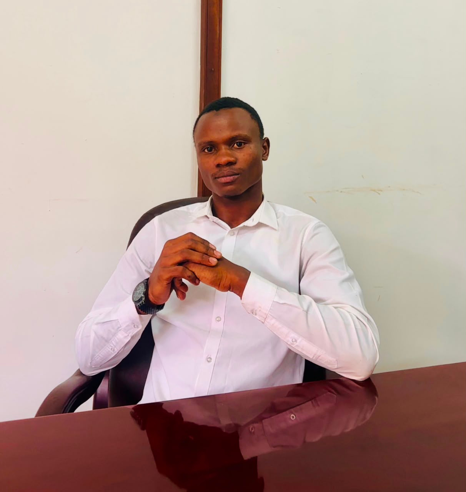
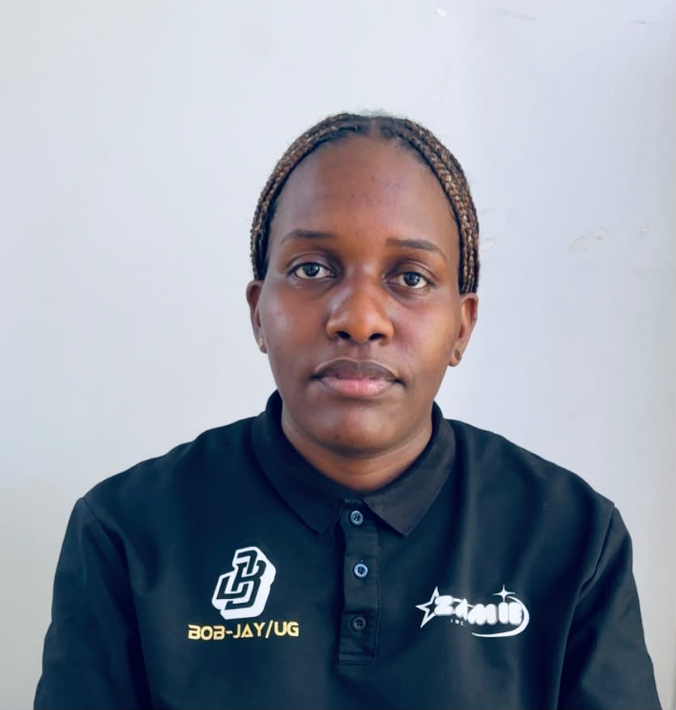
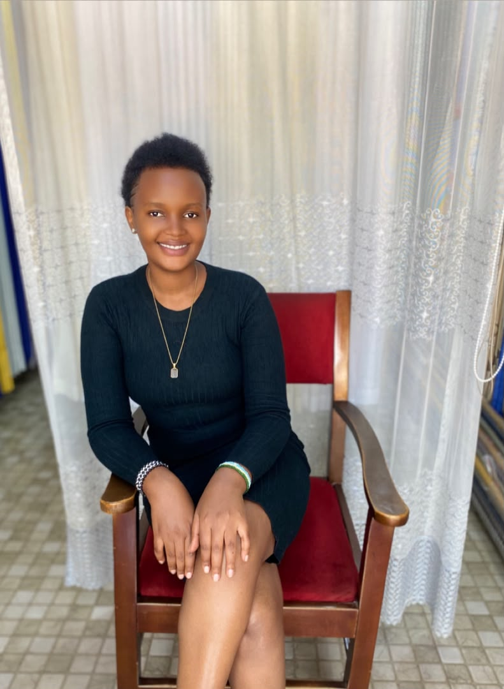
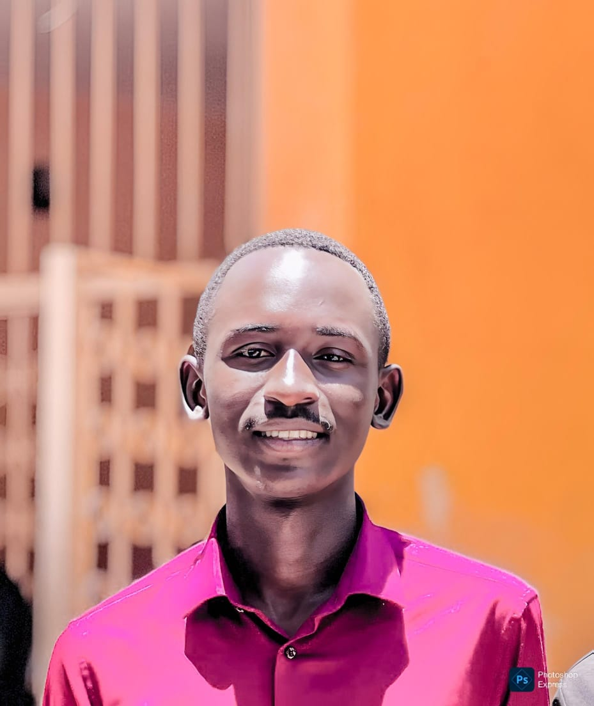
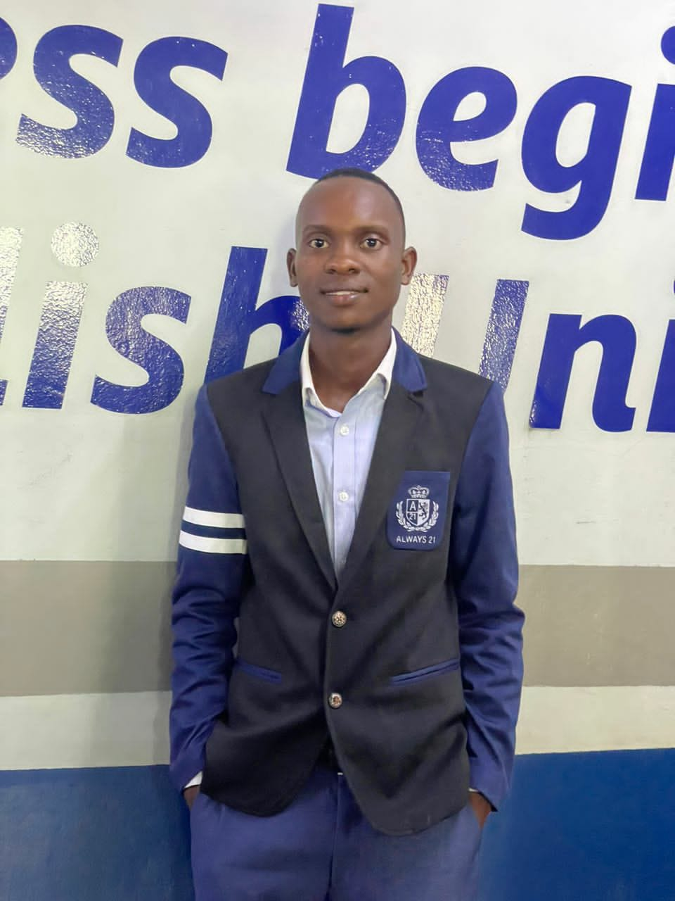

PROJECT LEADERSHIP
Musanya Musa
Founder & Project Lead
PEOPLE BEHIND THE INITIATIVE
Digital Independence is being developed by volunteers who bring different skills and responsibilities to the work.

Founder & Project Lead

Leadership & Wellbeing Lead

Leadership & Inclusion Coordinator

Senior IT & Technical Lead
Operations & Support Coordinator

Communications & Media Lead
Digital Skills & Motivation Lead
Digital Foundations Trainer
Digital Skills Trainer
The people listed are part of the initiative’s volunteer team. Roles describe their current responsibilities and do not imply that every planned programme is already operating.
JOIN THE EFFORT